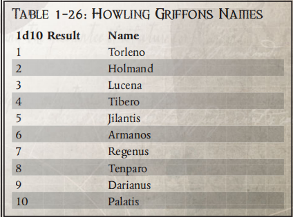
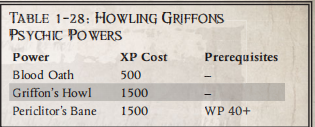

咆哮狮鹫
"帝国的敌人数量庞大。无论我们如何保持警惕，总会有人与我们作对。记住你的奉献和责任 但不要忽视你自己的需要 只有当皇帝陛下大发慈悲时，我们才会安息。"
——牧师无畏泰图斯
作为极限战士的继承者，咆哮狮鹫战团致力于使用《阿斯塔特法典》中规定的技术保卫帝国。在其悠久的历史中，这些战斗兄弟曾在整个帝国参加过无休止的战争。即使以阿斯塔特的标准来衡量，他们的荣誉也是最杰出的。这些星际战士从不逃避战斗，总是集中精力在每次交战的最前沿发挥核心作用。
战团摘要 创立： 未知 战团世界：曼科拉 要塞修道院：骄傲鹰巢 基因种子：极限战士 前身：极限战士 |
历史
咆哮狮鹫战团的确切起源已失传。很显然，他们是 M33 期间成立的产物。虽然荷鲁斯异端的悲剧已经结束，但当时帝国的安全仍面临无数威胁。在建军之初，可能有对额外星际战士的特殊需求，但这种需求已经消失在岁月的长河中。显而易见的是，从一开始，咆哮狮鹫就热情地接受了他们作为帝国卫士的角色。
自成立以来，咆哮狮鹫战团几乎从未间断过参与至少一场战役，并经常分兵驻扎，以便战斗兄弟能同时参与多场战役。尽管接受了这一挑战，但他们的成功程度和坚定不移的勇气为他们赢得了巨大的成功。如果没有高度的能力和对帝国的巨大奉献精神，任何战团都不可能取得如此辉煌的战绩。
这些成功也是在与各种各样的敌人作战中取得的。咆哮狮鹫军团曾在对抗 "掠夺者阿巴顿 "发动的 "黑色远征 "中立下汗马功劳。在Gunnerdark战役中，咆哮狮鹫战团的所有部队团结一致，战胜了兽人的威胁，保存了战役的胜利果实。该战团甚至阻止了纳斯的亡灵巫师，在不信者瘟疫期间终结了他们的小帝国。
怀言者
在咆哮狮鹫的大部分历史中，他们一直将叛徒怀言者军团视为最大的敌人。他们与这些叛徒的具体冲突起源尚不清楚。在咆哮狮鹫战团的早期历史中，发生过无数次攻击叛徒军团的事件。在这些野蛮的战斗中，双方部队的怒火都得到了充分的释放，因此都遭受了惨重的损失。
220.M38 年发生在阿里奥斯角的事件最终将咆哮狮鹫军团推向了对怀言者复仇欲望的临界点。当时的战团长是奥兰多·弗里奥索。他当时正与第八连和第一连的大部分老兵一起乘坐战团的战斗驳船。他们正在前往战团的母星曼科拉，庆祝战团成立五千年。当战斗驳船在阿里奥斯角星系停留补给时，先知混沌领主佩里克利托率领一支由怀言者和午夜领主组成的联合部队伏击了忠诚者。面对如此压倒性的力量，咆哮狮鹫惨遭重创，毫无准备。在一次残酷的登船行动后，他们古老的飞船很快就被摧毁了。幸存的星际战士乘坐雷鹰战机降落在附近的阿里奥斯-昆图斯（Arios Quintus）表面。这个贫瘠的世界对寡不敌众的咆哮狮鹫成员来说几乎没有任何保护。很快，那些在战斗驳船被摧毁后幸存下来的成员就被叛徒军团的协同攻击所淹没。没有一个人活着，混沌军团夺取了战团的大部分装备，包括第一连和战团长贴身卫队的珍贵装备，这些装备几乎无可替代。被杀者的尸体遭到亵渎，他们的基因种子要么被销毁，要么被偷走。唯一找到的一具尸体是战团长浮利欧索的。叛徒们把它装在了他的雷鹰战机上，留在了阿里奥斯-昆图斯的轨道上，以示警告。几个月后，咆哮狮鹫的其他成员追踪到了失踪的飞船和连队，并找到了战团长的尸体和基因种子。
这场悲剧发生后，咆哮狮鹫战团的所有成员都发誓要向佩里克利托和怀言者复仇。每招募一名新成员，都会再次宣读誓言。自此以后，两支部队发生了无数次小规模冲突，甚至是大规模冲突。
杰里科边区中著名的咆哮狮鹫 以下是咆哮狮鹫战团中声名显赫的星际战士。 编纂者米格尔-格里卡洛 753.M41 年，编纂者格里卡洛执行了一项扩展任务，调查黑暗模式的观察站。由于这些观察站大多位于死亡世界或无人居住的世界附近，其实施的动机仍不明确。智库之所以要进行这项研究，是因为他在执行任务之前的两年里持续收到了一系列幻象。根据他出发前的记录，这些占卜预示着这一地区即将出现危机。其中一些报告得到了当时与纂修官一起工作的其他灵媒的证实。 纂修者格里埃洛的杀戮小组在他离开之前取得了巨大的成功。其他成员和他的值班队长都不愿意看到智库离开，独自执行这项长期任务。然而，一位身份不明的审判庭成员发来的一封信，促使守望指挥官直接命令这位灵能者开始对守望站进行调查。自编纂者离开后，一直没有得到他的确认报告。对他的路线所包括的地点进行的例行调查显示，没有任何迹象表明他曾经到达过这些地点。他的命运仍然是个谜。 约瑟夫-文森兄弟 埃里奥克观察站的一些人员表示，战术陆战队兄弟文森斯已经发起了他自己的远征，打击维尔汉九号的钛星人。 在一次调查钛星人在伊南星行动的任务中，他的杀戮小队的两名成员被杀，文森斯发誓要向异种复仇。从那时起，他已经执行了数十次进入钛星人势力控制的太空的任务。除了战斗兄弟之外，没有人知道他誓言的确切内容，但很显然，他仍在努力履行自己的义务。他的杀戮小队的其他成员在协助文森修士时表现得非常通情达理——可能是因为他们自己也渴望复仇。自从宣誓之后，他的杀戮小队就开始了针对钛星人的不懈行动。他们离开这些异形控制的世界的大部分时间，都是在提交有关他们的任务细节和钛星人军队构成的威胁的法定报告。许多人怀疑文森斯修士已经成为杰里科边区上最了解钛星人战略战术的专家。然而，由于他无休止的任务，没有人能够将他发现的信息汇编成一份全面的报告。 |
丹纳尔四号镇压
丹纳尔四号位于桑格拉曼提亚星区，作为该星区一个活跃的农业世界，丹纳尔四号扮演着重要的供应角色。它的主要产出来自居住在广袤大草原上的巨型动物群。这颗星球上的屠宰城不断加工这些动物，为该地区的蜂巢世界提供食物，并为帝国军队提供口粮。这些重要的中心也是世界的管理机构。
109.M40 年，咆哮狮鹫回应了来自丹纳尔四号的求救信号，当时他们正在搜寻一支怀言者战队。令他们懊恼的是，他们发现这颗星球已经被崇拜毁灭力量的邪教徒严重侵扰。为数不多的幸存城邦里挤满了从这些扭曲的疯子手中逃出来的难民。
与背信弃义的异教徒相比，星际战士的人数要少得多，但装备要好得多，而且还有《阿斯塔特法典》的指导。咆哮狮鹫利用他们所有的资源，依靠机动性对叛徒发动了突如其来的毁灭性攻击。一旦这些亵渎者的兵力被大量消耗，战斗兄弟就会采取行动，打破对各个城邦的围困。 世界上幸存的部队集结起来，协助咆哮狮鹫展开最后的解放行动。由于世界守卫者与星际战士通力合作，最后的行动既残酷又可怕。从那时起，丹纳尔感激涕零的人民就将 "咆哮狮鹫 "视为他们的救星。他们定期为战团的食堂提供食物，并将自己的儿子提供给战团招募新兵。
乔伦报复
109.M41 年，第 15 希拉克伦铁甲舰部队的乔伦将军率领整个帝国战斗群背叛了帝国。黑暗灵族的侵袭通过使用邪恶的异种背叛手段控制了乔伦和他的随从。将军下令摧毁他的军队，并开始奴役帝国世界，为绯红吊祭阴谋团服务。数以百万计的人类在为可怕的异种服务时被杀害，而背叛的帝国人则继续对他们曾经发誓要保护的人进行亵渎性的破坏活动。
到了 143.M41 年，这支部队的消息传到了行政部那里，于是一支特遣部队被召集起来。咆哮狮鹫战团被委以领导重任，并最终全权负责阻止叛徒的行动。星际战士在极限战士和奥拉之子战团成员的协助下，在阿斯图里亚荒野世界拦截了叛军。攻击是如此猛烈，以至于在星际战士发动攻击的第一个小时内，就有五千多名叛军卫兵被击毙。战斗打响后，泰图斯牧师率领咆哮狮鹫第四连乘坐空投舱突入叛军的中心地带。叛徒们还没反应过来，战斗兄弟就消灭了叛军的首领，尽管他们付出了巨大的个人代价。在这些首领中发现了大量的黑暗灵族，还有一些军力中最精锐的部队，包括大量的欧格林骨干。一些异形被击毙，但更多的异形逃进了网道，而剩余的人类部队也随之崩溃。泰图斯牧师战胜了叛军将领，但在战斗中被异种毒药所伤，身负重伤。从那时起，他就在无畏石棺中继续为战团服务。
家园
在咆哮狮鹫战团已知的所有历史中，终极星域中的曼科拉世界一直是他们的家园。咆哮狮鹫战团来到这里之前的日子并不确定，那些记录早已被无常的时间所遗忘。自从他们到来之后，帝国的记录清楚地表明，咆哮狮鹫战团故意人为地阻止这个世界超越前工业时代的技术基础。通过一反常态的秘密行动和操纵，咆哮狮鹫还让世界上的封建城邦处于近乎持续的战争状态。政治动荡和技术停滞共同导致了一种对自身起源一无所知的文化。 当然，曼科拉的科技有限，但咆哮狮鹫的战斗兄弟们却没有受到这样的限制。事实上，要塞修道院监管着大量装备精良的工厂，这些工厂与世界上的原住民隔绝开来。这些工厂生产效率高，装备精良。事实上，咆哮狮鹫战团有能力制造一些不太常见的 STC 模型。其中包括 Mark VIII游侠型护甲和普罗米修斯型兰德掠袭者所需的模型。如此功能强大的锻造厂以及不受限制地获得其产出，对该战团随时保持部署能力起到了至关重要的作用。这一重要资产使战团能够不断为其舰队提供补给，并拥有充足的储备，使其入门者能够在进入战场前接受全面的培训。
除了曼科拉之外，咆哮狮鹫还从其他几个世界招募成员，包括丹纳尔四号。这对该战团来说是必要的，因为如果没有更多的世界，他们就不可能通过无休止的征战来挽回损失。值得注意的是，尽管有了这个选择，他们仍然继续优先从曼科拉招募人员。曼科拉多变的文化确保了来自该世界的候选人能够满足战团的需求。而其他一些选择，如丹纳尔四号，其文化则不太注重培养如此优秀的候选人。
曼科瑞星球招募人员的另一个原因是，该星球在历史上产生过大量的灵能者。许多具有这些天赋的人都被招入咆哮狮鹫，成为智库。不过，该战团的智库也会对该星球的人口进行监督，防止出现过度的灵能能力迹象。编纂者们会剔除任何可能构成亚空间污染风险的人。
基因种子
咆哮狮鹫的基因种子与基利曼血统的其他战团一致。它没有任何已知的污染，繁殖稳定，并能产生星际战士的全部植入物。由于咆哮狮鹫在多个战区都非常活跃，因此他们会严格按照规定及时从战友身上采集并确保原生腺体的安全。在野外采集的原生腺体会在短时间内被送上最近的船只，然后尽早送回曼科拉储存。
这种责任感在很大程度上是因为该战团成员的流动率非常高。这些星际战士喜欢参与任何战斗中最激烈的部分，而且几乎总是处于战争状态。因此，该战团的伤亡率确实比平常要高，这只能通过相应的高招募率和入会率来弥补。目前，记录显示该战团的基因种子供应充足，足以满足他们的巨大需求。
咆哮狮鹫角色 咆哮狮鹫严格遵守《阿斯塔特法典》的规定，不断磨练自己的技能，提高战友们的能力。咆哮狮鹫军团以精准的武艺寻求进步，并以其在皇帝的战争中长期作战、一尘不染、为帝国尽忠的历史而自豪。这个记录上唯一的污点就是他们对怀言者叛徒军团的憎恨，该叛徒军团在一次懦弱的伏击中杀死了他们的一名战团长和许多勇敢的战斗兄弟。 咆哮狮鹫 "星际战士可获得以下好处： +5 武器技能、"禁忌学识：叛徒军团 "技能（尤其是与怀言者有关的技能）、"憎恨（怀言者）"天赋和 "战术评估 "单人模式能力。 举止：光荣传统 咆哮狮鹫的战斗兄弟们努力践行他们作为神盾局楷模的声誉，这为他们在兄弟中赢得了许多荣誉。即使咆哮狮鹫是二次建军战团，他们所取得的胜利也会被认为是伟大的；而对于一个 33 世纪成立的战团来说，他们的战绩的确是辉煌的。在阿斯塔特中，很少有人能比傲慢鹰巢城的战斗兄弟们更充分地体现《阿斯塔特法典》的理想。每个战斗兄弟肩上都担负着个人和前辈的荣誉。每个人都有责任以身作则，激励自己的战友以人类皇帝和他光荣的帝国的名义做出更大的英雄壮举。星际军团的荣誉、原体、皇帝和帝国都要求星际军团的战斗兄弟们在星际间征战，而没有任何一部著作比《阿斯塔特法典》更能体现星际战士的战斗能力。拥护这本厚重的巨著，就是拥护胜利。 |
哲学
即使在阿斯塔特的战士兄弟中，咆哮狮鹫也是一个骄傲而好战的战团。他们光荣而传奇的历史就是对这一声誉的最好证明。咆哮狮鹫在帝国内外几乎无时无刻不在执行任务，他们是阿斯塔特创立之初所体现的尚武精神的典范。事实上，从他们的家园到最遥远的战场，咆哮狮鹫战团都是一台卓越的战争机器。
从招募前的最初阶段开始，曼科拉的精英战士们就在战火纷飞的前工业世界中成长，他们有朝一日将成为咆哮狮鹫的战斗兄弟。在这个战斗、个人和家族荣誉以及武职的熔炉中，这些公民被锻造成完美的候选人。正是在这种生活中，他们学会了光荣战争的价值，学会了尊重和依靠自己的战友。虽然他们可能缺乏技术，甚至无法理解阿斯塔特的军事力量，但曼科拉的人民因其出生的文化背景而对咆哮狮鹫的理想深信不疑。当一个新兵终于有一天被提升到阿斯塔特的行列时，这几乎是他前世的延续，尽管规模要大得多。他的纹章不再是当地家庭的纹章，而是横冲直撞的狮鹫。他在战场上的盟友不再是当地贵族，而是他的战友。他所保卫的土地不再是他的城邦，而是更伟大的人类帝国。当他第一次穿上赭红和深红的战袍时，他就抛开了过去的军事训练和传统，将《阿斯塔特法典》中基利曼的教诲奉为至宝。
作战原则
在准备交战时，咆哮狮鹫严格遵守法典的教导。他们的战术与规定保持一致，只有在基利曼鼓励创新的情况下才会有所动摇。由于《法典》的教义全面而务实，这很少成为问题。即使严格遵守《法典》，咆哮狮鹫也不会牺牲多少灵活性。他们既能有效应对任何已知对手，也能迅速适应新对手的能力。
战团成员履行誓言的动力往往会影响他们的战术决策，但绝不会左右他们的战术决策。如果战友让其指挥官了解自己的誓言，并有机会实现誓言，那么会尽量满足他的需求。然而，只有在这种情况不会大幅增加特定交战风险的情况下，才允许进行此类考虑。这些星际战士珍视他们的誓言和荣誉，但他们一般不愿意为履行誓言而接受不必要的伤亡。当然，这条规则也有例外，特别是对于怀言者和恶魔亲王佩里克利托。咆哮狮鹫按照《法典》的指示组织成具有特定职责的战斗连队。与法典宗旨不符的情况通常只是由于成员流动率较高。由于星际战士的伤亡率很高，而且招募工作非常积极，因此他们并不总是有能力派出足够的战斗兄弟，以保证十个连队都能满员。有时，战团会在各连之间调换成员，以便在另一个连接受再补给和再训练时，另一个连可以被派去参战。虽然成员们经常对补给任务不屑一顾，但大多数人都口头上接受其必要性，同时试图在另一个连队执行任务前将其调到该连队。
该战团的家园曼科拉拥有异常高的灵能出生率。咆哮狮鹫智库的数量和天赋就反映了这一事实。最终，这些天赋异禀的星际战士以符合法典教义的方式发挥了自己的才能。然而，由于这些成员的数量特别多，他们的服务在塑造本章的战斗中继续发挥着至关重要的作用。这些战斗兄弟代表着重要的战略资产，因此战团的军官们会小心翼翼地以最有效的方式利用他们。
咆哮狮鹫过去
| 1D5结果 | 过去经历 |
| 1 | 古老誓言：咆哮狮鹫非常重视他们对皇帝的誓言，并经常在执行重要任务或十字军东征时立下誓言。你在被借调到死亡守望之前就已经立下了这样的誓言，而誓言的完成仍然悬挂在你的头顶，提醒着你如果有机会就一定要完成它。 |
| 2 | 让话语沉默：怀言者是咆哮狮鹫最憎恨的敌人，消灭他们也是守望一直以来的任务。你曾在战斗中面对过怀言者，并被他们的怨恨深深触动，以至于你现在明白了为什么必须不惜一切代价将他们全部消灭。 |
| 3 | 过去的失败： 作为咆哮狮鹫的战斗兄弟，失败和改正失败的责任是不可或缺的；这也是咆哮狮鹫分会对所有成员的高标准要求。你曾遭受过这样的失败，并一直耿耿于怀，必须将其从你的记录中清除，要么以某种方式完成旧的目标，要么获得新的荣耀，让自己的过去黯然失色。 |
| 4 | 曼科拉本地人： 咆哮狮鹫是从曼科拉的战争世界招募来的，这个星球因无休止的战争和冲突而伤痕累累。你来自这个世界，从你能拿枪的年龄起就是一名士兵，你只知道打仗和耳边的爆炸声。 |
| 5 | 破碎誓言：咆哮狮鹫的每一个誓言都不是已经或可以完成的，有些誓言甚至会因为意志最坚定的战斗兄弟无法控制的情况而被打破。你就曾经历过这样一次誓言破碎，由于无法控制的事件而无法完成誓言。这次失败仍然困扰着你，你一直在努力弥补。 |

咆哮狮鹫原体诅咒：诅咒话语
220.M38 年，咆哮狮鹫分会遭遇了最黑暗的一天——怀言者叛徒军团的袭击。当时的战团长奥兰多-弗里奥索和分会的第一连在返回家园的途中遭到了佩里克利托领主和他的怀言者者的伏击。在随后的苦战中，第一连和奥兰多被杀，咆哮狮鹫的战团长被绑在自己的雷鹰上，任由雷鹰在轨道上飘荡，这是对咆哮狮鹫的最后侮辱。从那天起，咆哮狮鹫分会就开始培养和酝酿对怀言者无尽的仇恨，并发誓要不惜一切代价报复他们和他们的领主佩里克利托。这种仇恨在每一个咆哮狮鹫战斗兄弟的心中酝酿，但在疯狂的时候也会蔓延开来，吞噬他们和他们的每一个念头。
1级（背叛的代价）： 战兄越来越沉迷于怀言者的背叛行为，并在脑海中一遍又一遍地重温他们的致命伏击。这不仅刺激他去寻找可恨的怀言者，还让他看到了其他地方的背叛行为，将对他的分会犯下的大罪与其他事件进行比较。只要有一丝背叛的迹象，就足以促使战斗兄弟做出强烈而激烈的反应，他可能无法控制自己的反应。如果战斗兄长接触到疑似叛徒（帝国、死亡守望或他所在的分会），他必须进行一次常规（+20）意志力测试。如果通过，他可以克制自己，但会对已知或疑似叛徒非常不满；如果失败，他就会将惩罚他们视为自己的职责，如果他们的罪行足够严重，他甚至可能会将他们即决处决。
2级（叛徒追踪）： 随着战斗兄弟对叛徒的憎恨与日俱增，他对找到并消灭 怀言者的执着也与日俱增，他不愿放弃任何可能找到叛徒的任务或线索。在任务中，这可能意味着他要不遗余力地寻找已知或可疑的叛徒，甚至改变任务目标，将其包括在捕获或消灭叛徒的任务中。在其他情况下，这可能意味着对知识的痴迷和对危险或禁书的渴求，如果这意味着获得叛徒位置和罪行的线索的话。在这两种情况下，如果颠覆任务或探寻知识会将战斗兄弟或他的小队置于极度危险之中，游戏管理者可以允许一次常规（+20）意志力测试来进行抵抗，除非该行动直接与怀言者有关，则不允许进行测试。
3级（进入恐怖之眼及以外）： 战斗兄弟渴望铲除怀言者，偿还他们对战团犯下的罪行，最终不惜一切代价消灭他们。战斗兄弟会在任何战斗环境或任务中都会寻找混沌星际战士，如果力所能及，他们会让自己的小队尽可能多地与混沌星际战士交锋，确保他们被部署到可能与他们正面交锋的战区和战役中。当遇到这些可恨的敌人时，战斗兄弟会竭尽全力消灭他们，不让他们逃脱，即使这意味着要留下其他人追赶他们，不管他们跑到哪里。
| 中文 | 英文 | 消耗 | 类型 | 先决条件 |
| 学术知识：阿斯塔特圣典+10 | Lore:Scholastic(Codex Astartes)+10 | 200 | 技能 | |
| 学术知识：阿斯塔特圣典+20 | Lore:Scholastic(Codex Astartes)+20 | 300 | 技能 | 学术知识：阿斯塔特圣典+10 |
| 战术（任何） | Tactics(any) | 200 | 技能 | |
| 刀锋大师 | Blademaster | 600 | 天赋 | WS30、近战武器训练（任何） |
| 爆弹穿透 | Bolter Drill | 500 | 天赋 | - |
| 格斗专家 | Combat Master | 600 | 天赋 | WS30 |
| 铁律 | Iron Discipline | 400 | 天赋 | WP30、指挥 |
| 出生入死 | Into the Jaws of Hell | 500 | 天赋 | 铁律 |
| 铜墙铁壁 | Wall of Steel | 800 | 天赋 | AG35 |
咆哮狮鹫单人模式
战术评估
行动： 自由行动
所需等级：1
效果 咆哮狮鹫拥有敏锐的洞察力和精明的战术头脑，能够在战术不佳的情况下做出最佳选择，并利用很少有人认为有利的资源和位置。此能力可在战斗过程中战斗兄弟回合结束时的主动权顺序中激活。激活该能力后，"战兄 "会立即与当前战斗回合中已行动的敌人交换主动权顺序中的位置。战兄的回合随即结束，主动权顺序从他原来的位置开始向前推进。
在等级 5 时，当咆哮狮鹫战兄使用此能力时，除了所有其他效果外，在接下来的整个战斗回合中，他在与主动权顺序中与他交换位置的对手进行的所有测试中都会获得 +10 的加成。当等级达到 7 时，除了所有其他效果外，目标对手在接下来的整个战斗回合中的所有测试都会受到 -10 的惩罚。
示例 泰贝罗和阿玛诺斯正在与泰伦利卡特交战。他们都掷了主动权掷骰，利卡特得到 16，Tibero 得到 10，Armanos 得到 5。利卡特轮到自己后，Tibero 轮到自己，并使用战术评估与利卡特交换了主动权顺序中的位置。现在泰伯罗的主动权为 16，而利卡特的主动权为 10。现在泰伯洛的最后一个行动已经完成，他的回合结束，主动权排序进入处于主动权 5 的阿曼诺斯。在阿曼诺斯的回合结束后，主动权顺序将从头开始，先是泰贝罗，然后是利卡特，以此类推。 |
咆哮狮鹫小队模式能力
咆哮狮鹫攻击模式：同步攻击
行动：半行动
代价：2
持续： 是
效果： 咆哮狮鹫使用《阿斯塔特法典》的教义和他们自己的个人战术进行多年的训练，可以实施迅速而令人震惊的攻击，小队中的每个成员都能与他们的兄弟完美配合。在支援范围内的战斗兄弟及其小队其他成员可以与杀戮小队的其他成员交换发动顺序，而不会受到惩罚，也无需使用延迟行动。在开始回合后，战斗兄弟可以立即选择自己使用，或将其交给其他小队成员，由后者代替自己行动。然后，战斗兄长将取代轮到他的小队成员的主动权，并且在此之前不会再行动，当然，除非小队中的其他成员选择将自己的主动权让给他。无论战斗兄长的新主动权排序如何，他在一回合内的行动仍不得超过一次。
改进： 等级 4 时，使用此能力的战斗兄弟在回合后期放弃主动权行动，他的第一次测试将获得 +10 的加分，因为他能更好地勘察局势。等级 7 时，该 +10 测试奖励适用于他在本回合中进行的所有测试。
示例 Tibero、Jilantis 和 Armanos 正在使用 "同步突袭 "能力，刚刚遭到一群 Tau 火战士的攻击。他们各自掷出先攻掷骰，蒂贝罗得到 8，吉兰提斯得到 6，而阿曼诺斯得到 11，而钛星人得到 7。阿曼诺斯先发制人，但他选择将主动权交给吉兰提斯，这样他就能在钛星人行动之前用重爆弹喷射他们。这意味着吉兰提斯现在的主动权是 11，而阿玛诺斯的主动权是 6。下一个是泰伯罗，他不能将主动权交给吉兰提斯，因为他的队友已经在本回合行动了，但他可以将主动权交给阿玛诺斯，这意味着阿玛诺斯将在钛星人之前行动，而泰伯罗将最后行动。 |
咆哮狮鹫防御姿态：交错防御
行动：自由行动
代价：3
持续： 是
效果 当每名兄弟战队成员都能完美配合时，一场精心策划的攻击就能产生毁灭性的效果；同样，当战队受到攻击或威胁时，一个精心构建的防御阵型能让战队中的每名成员都能掩护对方并进行防御。支援范围内的兄弟战队只要能看到至少一名队友，就能为对方提供防御加成。在面对范围攻击时，兄弟战队会为其闪避尝试提供 +10 的加成，因为兄弟战队会掩护他的位置并警告他即将到来的攻击。面对近战攻击时，兄弟战队可以使用他们通常在武器技能测试中获得的 "群殴 "加成，作为对同一敌人进行招架时的加成。
提高： 等级 5 时，闪避尝试的奖励增加到 +20。
咆哮狮鹫灵能

血誓
行动 全行动
对抗： 否
范围： 自身
持续： 无
描述： 咆哮狮鹫分会的智库和其他兄弟一样认真对待自己的誓言，他们可以用鲜血对誓言进行精神绑定，使誓言更加有力和持久。智库在任务开始时宣誓时会召唤他的原体之力，不仅将自己的言语，还将自己的精神融入誓言中，并在誓言中滴上几滴自己的鲜血。这种力量只能在任务开始时的任务准备阶段使用。杀戮小队的任何其他成员都可以选择与智库一起参与宣誓。血誓只能在受束缚的情况下使用，因此没有机会引发亚空间危险。如果智库未能激活，则不会有进一步的效果，并且在下一次任务开始之前他都不能再使用该能力。
如果智库成功使用了这一能力，他和杀戮小队的其他成员就会获得一个临时命运点数池，该点数等于智库的灵能等级。该池持续到任务结束。在连续游戏会话开始时，临时命运点数不会补充。这些命运点数不能被燃烧，但参加过宣誓的战友可以正常使用。不过，这种好处也有风险。如果杀戮小队未能完成半数以上的任务主要目标，那么参与宣誓的战友就会从其个人命运点数池中燃烧一个命运点数，永久减少一个命运点数。
狮鹫嚎叫
行动 半行动
对抗： 否
范围： 10米 x 灵能等级半径
持续： 否
描述 智库向亚空间发出呼唤，并像俯冲的猛禽一样发出强大的叫声，让敌人胆战心惊，粉碎他们的决心。这声号角也是对付亚空间的有力武器，可以动摇将它们束缚在物质位面的束缚，将它们从哪里来送回哪里去。当这一力量显现时，在其范围内的一定数量的目标会将智库计入恐惧（2）特质，如果他们能看到智库或听到他的呼喊，就必须进行恐惧测试（除非他们对恐惧的效果免疫）。此外，任何具有亚空间不稳定特质的生物都必须进行不稳定性测试，其意志力受到的惩罚等于 2 x 灵能等级。如果范围内有多个目标可供选择，而其中一些具有恶魔特质，那么智库必须先选择这些目标，然后再选择不具有该特质的目标。
佩里克利托的诅咒
行动 半行动
对抗： 是
范围：20 米 x 灵能等级
持续： 是
描述： 咆哮狮鹫对怀言者和他们的领主佩里克利托的强烈憎恨已被本章的智库转化为许多针对叛徒军团的能力。当智库召唤出这种能力时，他就会针对其中一个叛徒军团产生痛苦的共鸣。智库在范围内选择一个目标，并对其进行挑战性（+0）对抗意志力测试。每失败一次，他们的所有测试都会受到-10的影响，并且只能在下一回合采取一次半行动。如果智库以超过四度的成功率击败他们，那么他们也会受到 2 x 灵能等级的冲击伤害，该伤害不受护甲影响。
咆哮狮鹫装饰
以下是咆哮狮鹫分会的战斗兄弟可以使用的分会饰品。
暗夜世界战斗涂装
在某些情况下，分会可能会被允许在其盔甲上使用变异涂装，为其涂装上特定于个别战役或交战的不同图案。在几次交战中，咆哮狮鹫就被批准使用这种涂装，放弃了他们通常使用的大胆的红色和黄色。在这些官方法典图案和颜色中，就包括 "暗夜世界 "战斗涂装。如果任务涉及隐形或侦察元素，咆哮狮鹫战斗兄弟可以选择在任务前将其装甲涂成 "暗夜世界迷彩"。当他的盔甲以这种方式涂装时，他的隐蔽技能测试会获得 +10。